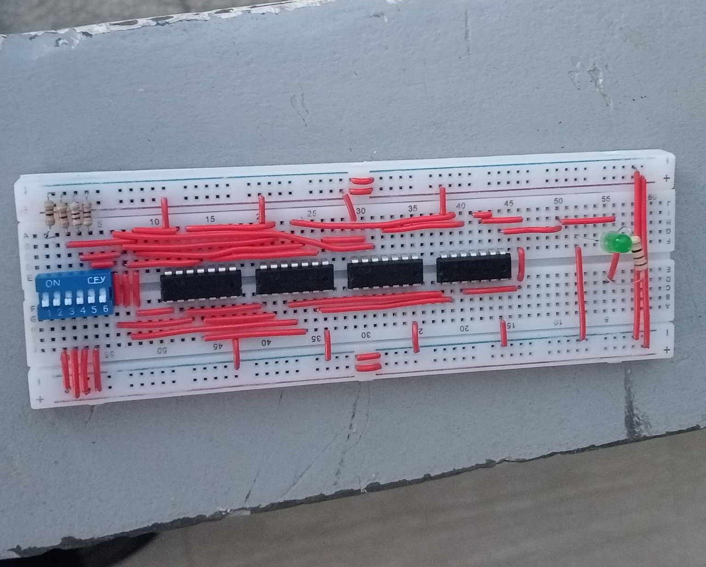

This project involves the practical application of digital logic design concepts using Circuit Maker 2000. The goal is to simplify and implement a given Boolean expression using fundamental logic gates. Through the installation of Circuit Maker 2000 and independent learning via instructional videos, students will gain hands-on experience in designing, assembling, and testing a logic circuit. The project employs common electronic components like breadboards, ICs (AND, OR, NOT gates), wires, and dip switches, making it accessible for beginners. The focus on both software simulation and physical implementation enhances understanding and proficiency in digital logic design. The project not only reinforces theoretical knowledge but also cultivates practical skills in electronics and circuitry.
This project involves creating a visually appealing and responsive personal portfolio website for students, utilizing HTML, CSS, and JavaScript. The website features sections such as "About Me," "Projects," and "Contact," with a focus on semantic HTML, clean CSS styling, and responsive design. Interactive elements, including a dynamic project gallery and form validation, enhance the user experience. The navigation menu ensures easy access to different sections, and a sticky navigation bar enhances user navigation. Overall, the project aims to showcase each student's skills, projects, and achievements in a well-organized and engaging manner.